Mēs daudz laika pavadām svaigā gaisā: sarunās, spēlēs, pastaigās un kopīgos piedzīvojumos.
Mūsu fokuss
Sagatavot dievbijīgas sievietes nākamajai dzīves sezonai.
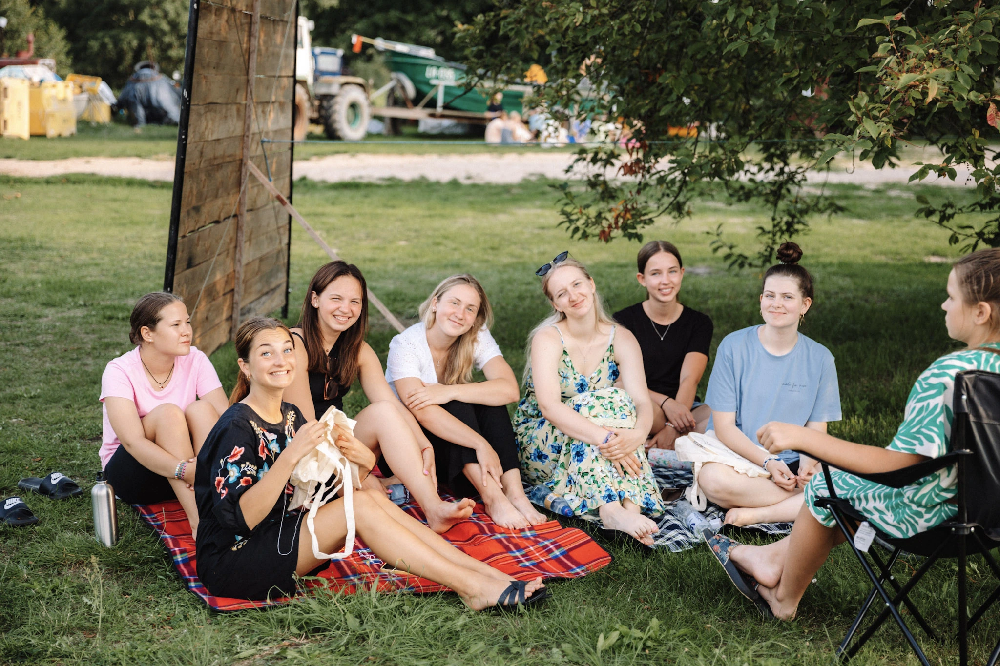
No ēst gatavošanas līdz kustībai, skaistumkopšanai un radošām aktivitātēm.
Nometnes centrā ir laiks ar Dievu. Lekcijās, sarunās un klusumā mācāmies labāk iepazīt Dievu un sevi.
Ir arī brīži, kas palīdz pārkāpt savām robežām, vairojot drosmi, izturību, uzticēšanos sev un komandai.
Svarīga nometnes daļa ir būt kopā. Sarunas, smiekli un draudzība, kur vari būt pieņemta tāda, kāda esi.
Par mums
Pazīt Tevi komanda
PAZĪT TEVI ir kristīga nometne sievietēm vecumā no 15 līdz 25 gadiem, kurā kopā augam ticībā, attiecībās un identitātē. Mūsu komandā ir sievietes dažādos vecumos un dzīves sezonās – no dažādām pilsētām un draudzēm. Mūs vieno mīlestība uz Jēzu un vēlme iedrošināt jaunās meitenes iepazīt Dievu un sevi. 2022.gada sākumā Dievs īpaši uzrunāja Martu un Sabīni par nometni meitenēm. Lūdzot un meklējot Dieva vadību, tika sperti pirmie soļi, un pamazām izveidojās komanda, kas ar prieku kalpo šajā nometnē.
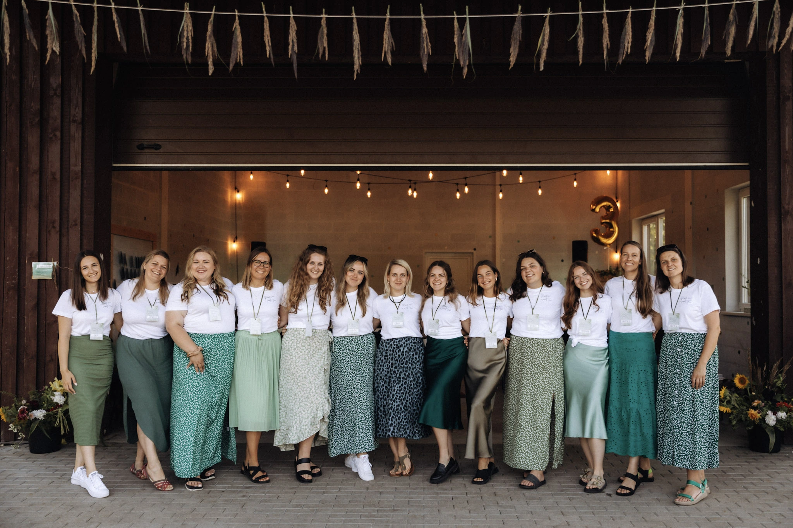
Vadītājas
Iepazīsti mūsu šī gada komandu
Komanda, kas ar prieku kalpo un rada vidi, kur meitenes var augt.
MARTA
Nometnes izveidotāja
Man ļoti patīk kvalitatīvi pavadīts laiks ar cilvēkiemMeiteņu nometne man ir svarīga, jo ticu, ka Dievs var īpaši darboties, kad nākam kopā un ļaujam Viņam piepildīt Savu gribu - celt gaismā, dziedināt, atjaunot, celt, iedrošināt.
SABĪNE
Nometnes izveidotāja
Esmu meita savai mammai un vecākā māsa savai Ketlīnai. Meiteņu nometne man ir svarīga, jo vēlos, lai meitenes ierauga sevi Dieva acīm un notic tam, ko Dievs saka pa mums un dzīvo savu dzivi balstoties uz to!
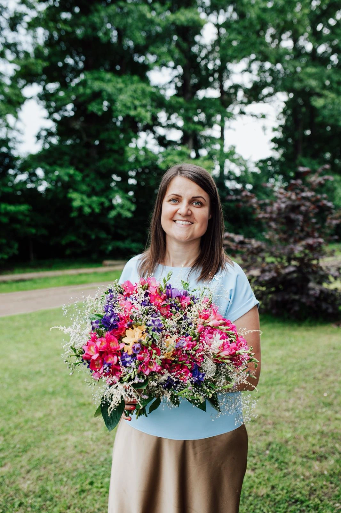
AGATE
Nometnes organizatore un grupiņas vadītāja
Esmu ģimenes cilvēks. Ļoti patīk dot un iepriecināt. Meiteņu nometne man ir svarīga, jo tas ir īpašs un nošķirts laiks, kur Dievs var darboties meiteņu sirdīs un dzīvēs, caur lekcijām vai induviduālām sarunām katra ikviena var saņemt tik daudz!
SAMANTA
Nometnes organizatore, grupiņas vadītāja, atbildīga par nometnes dizainu
Meiteņu nometne man ir ļoti svarīga, jo esmu piedzīvojusi, kā Dievs ir mainījis manu sirdi un cik liela svētība ir patiesi nodoties Viņam. Tāpēc man ir svarīgi, ka arī katra meitene to var piedzīvot.
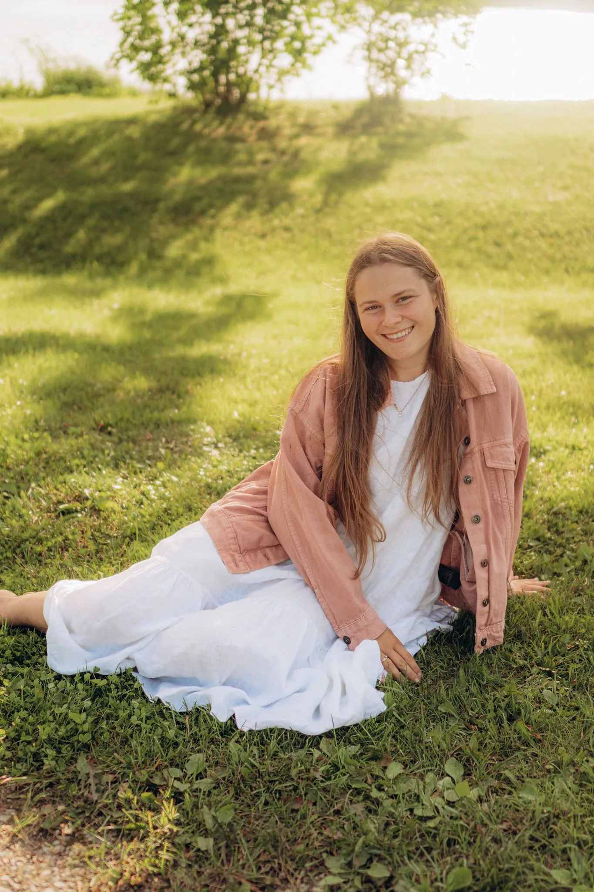
ANCE
Rada svētku sajūtu un skaistumu apkārt nometnē
Man ir svarīgas un pamanu mazās detaļas. Meiteņu nometne man ir svarīga, jo man rūp, lai jaunas meitenes iepazītu Dievu un caur to atklātu savu identitāti, sievišķību un aicinājumu.
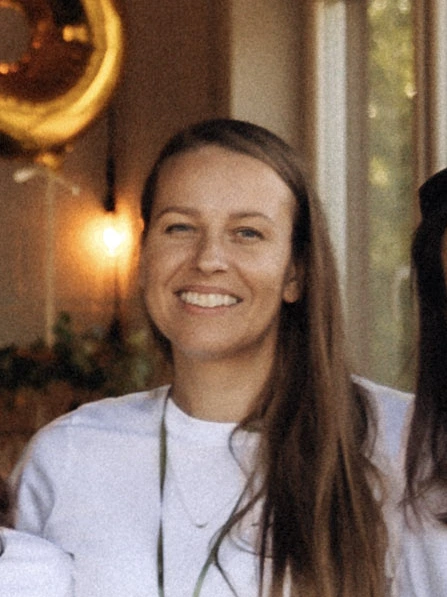
AGNESE
Atbildīga par nometnes kārtību un tīrību
Man patik parūpēties, lai visi justos labi. Meiteņu nometne man ir svarīga, jo tā ir vieta meitenēm, kur piedzīvot māsu sadraudzību, sapratni, piedzīvot cerību, piedošanu, un iespēju piedot citiem.
ZANDA
Daudzpusīgums, grupiņas vadītāja, slavēšanas komandā un meistarklases vadītāja šī gada nometnē
Meiteņu nometne man ir svarīga, jo pasaule ir diezgan skarba vieta, kurā, manuprāt, ir labi, ka meitenes iegūst kādu “virzienu karti” savai vērtībai, nozīmībai un brīnišķīgumam Dieva acīs.
AMANDA
Nometnes organizatore, grupiņas vadītāja
Mani interesē viss par un ap veselīgu dzīvesveidu. Meiteņu nometne man ir īpaši svarīga, jo redzu, cik daudz tajā var mācīties, dzirdēt un no jauna atklāt patiesības, ko Bībele māca par sievieti.
DIĀNA
Nometnes organizatore, grupiņas vadītāja
Esmu sieva vienam,mamma četriem un Dieva mīļā meita. Ikdienā nodarbojas ar "viesuļvētras" koordinēšanu. Meiteņu nometne man ir svarīga,jo tā ir iespēja kalpojot citām,augt pašai. Esmu pārliecināta,ka sievietēm ir ļoti svarīga kopiena, kurā justies sadzirdētai,saprastai un apmīļotai.

KARLĪNE
Nometnes organizatore, grupiņas vadītāja
Manu sirdi īpaši silda skaisti saulrieti un cilvēku smiekli. Meiteņu nometne man ir svarīga, jo tā palīdz meitenēm piedzīvot Dieva mīlestību, noticēt tai un iemācīties pieņemt sevi tādas, kādas Dievs viņas ir radījis.
GUNA
Nometnes organizatore, grupiņas vadītāja
Esmu ļoti pacietīga. Meiteņu nometne man ir svarīga, jo tā stiprina ticību, veicina vērtību apzināšanos un palīdz augt garīgi, emocionāli un savstarpējās attiecībās.
Foto mirkļi
Atmiņas no nometnes
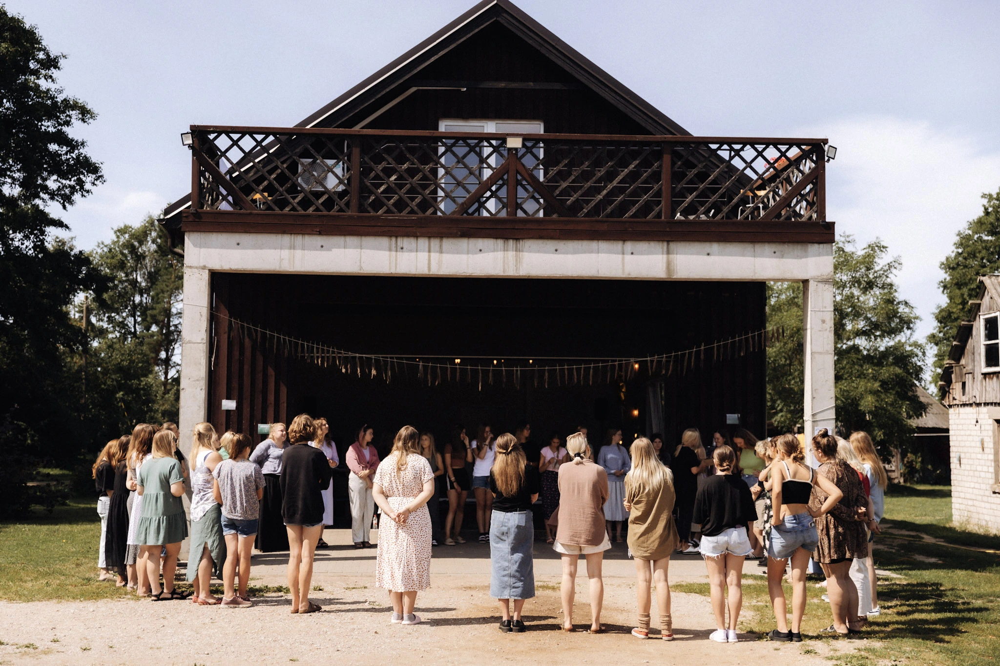
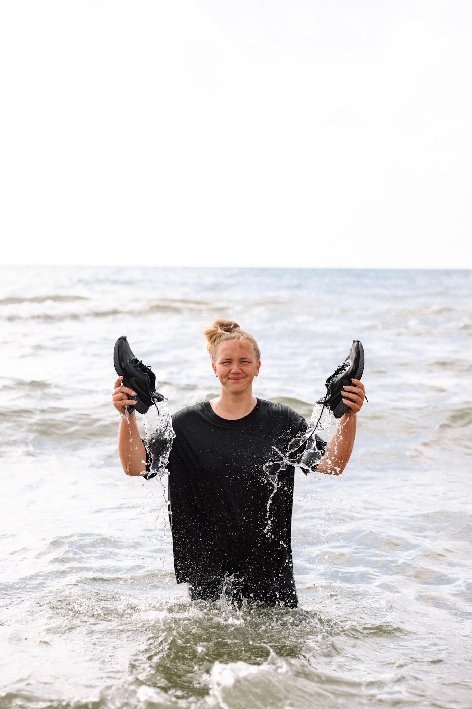
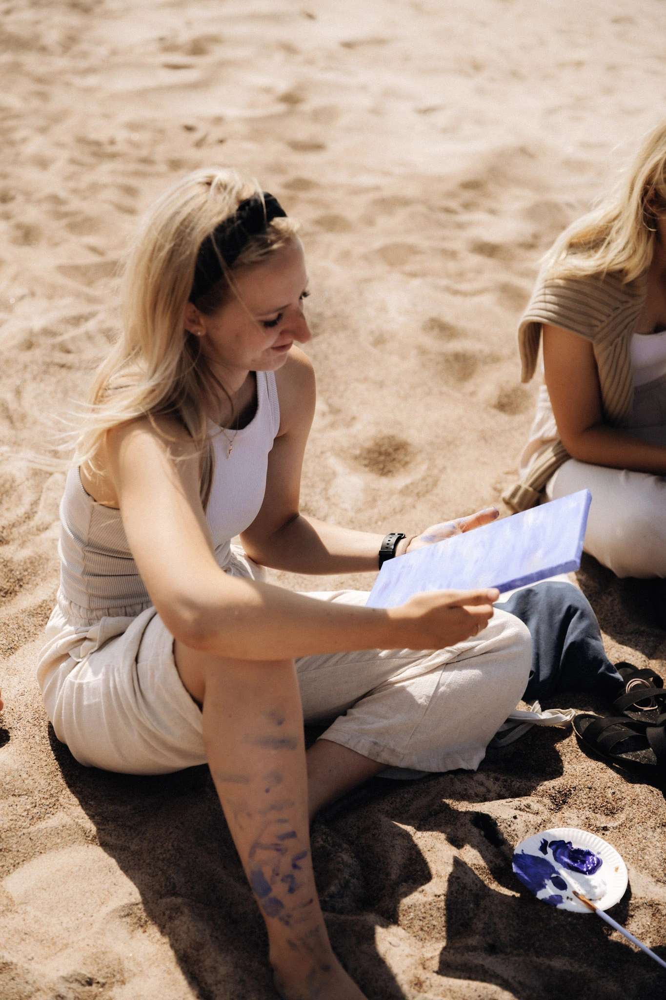
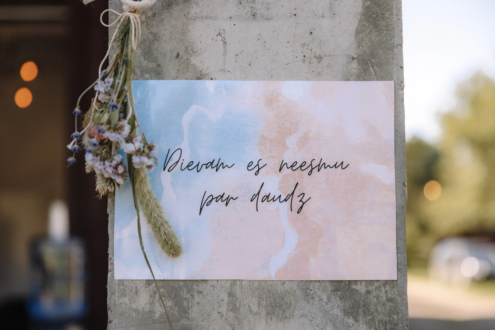
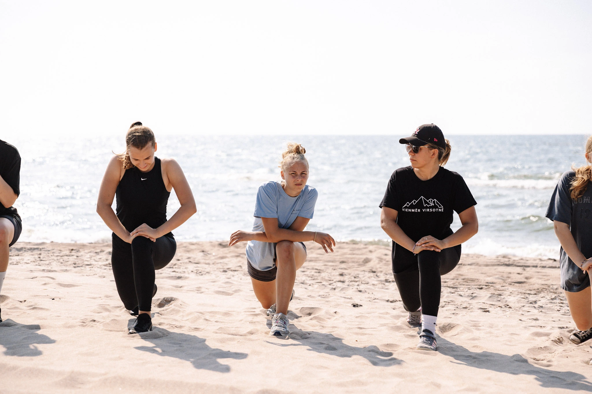
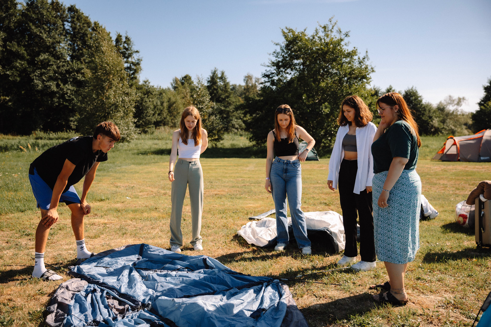
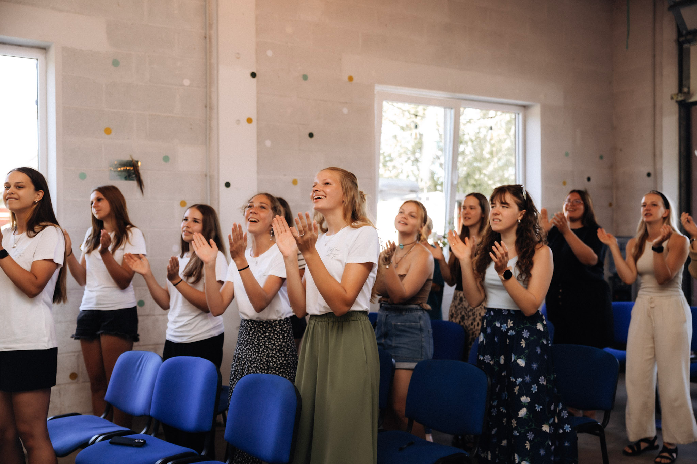
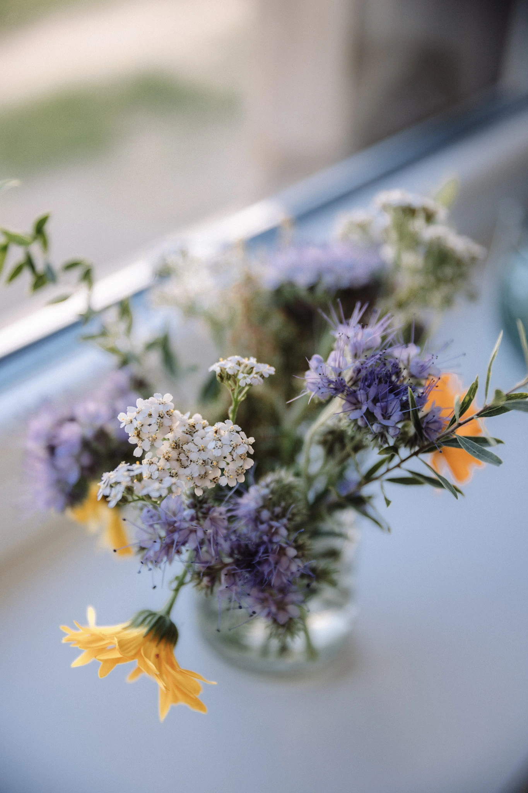
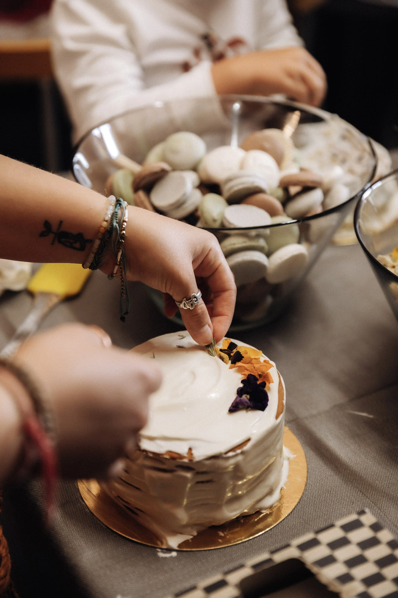
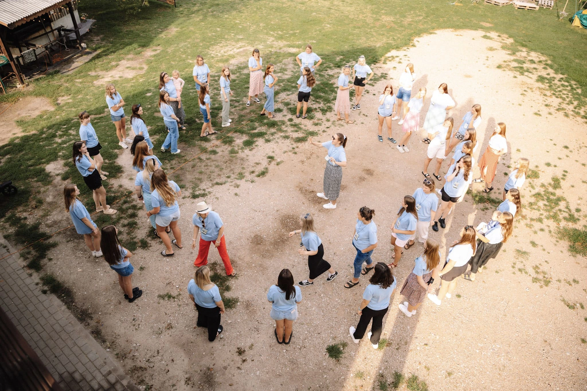

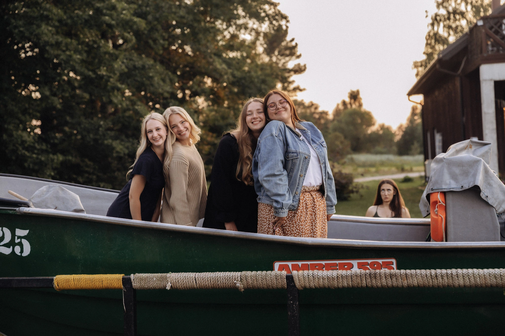
Atsauksmes
Ko saka meitenes pēc nometnes
Lana
NOMETNES DALĪBNIECE
Katrīna
NOMETNES DALĪBNIECE
Inita
NOMETNES DALĪBNIECE
Karīna
NOMETNES DALĪBNIECE